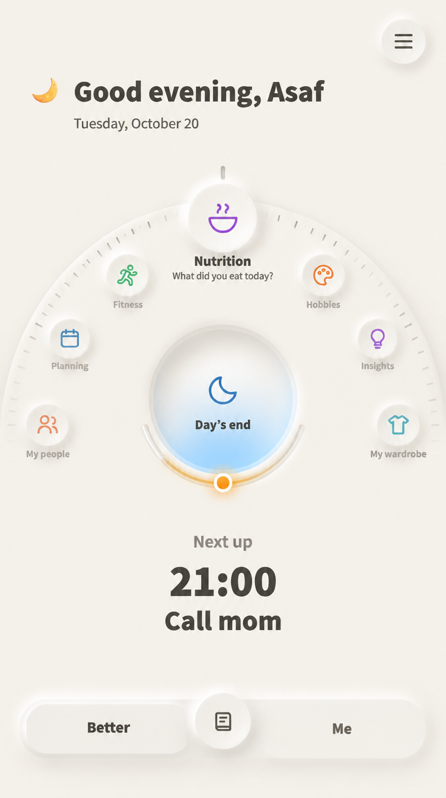
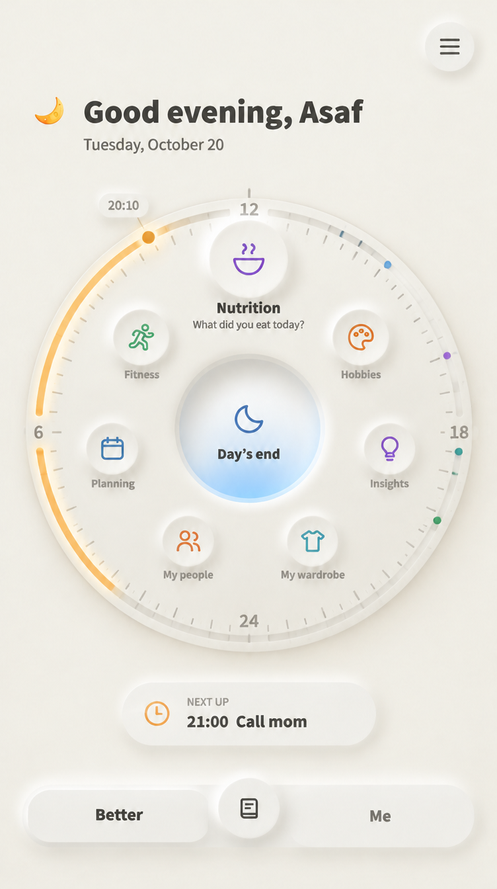
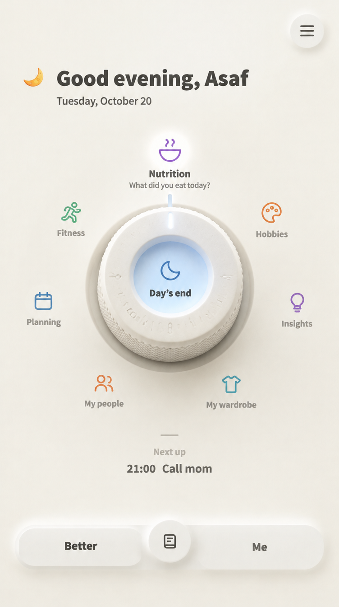

החוגה: שלושה סגנונות
החוגה שאהבת, ועוד שלוש דרכים לעשות אותה. בכולן מסובבים באגודל, החלק שלמעלה בפוקוס ושואל שאלה אחת, ו"סיום יום" הוא הבאר במרכז. אלה הדמיות, כך שטקסט קטן בהן לא תמיד מדויק. ב־dev לא שיניתי כלום.

החוגה שבחרת
גלגל שלם עם שנתות. השעון של היום נעלם בה.

חוגה שעולה מלמטה
רק החצי העליון של הגלגל נראה, כמו שמש שעולה, ולכן זו בעצם המניפה שאהבת, רק שמסתובבת. החלקים מתגלגלים לאורך הקשת ונעלמים בקצוות. מתחת לבאר נשארה קשת היום הצמודה שכבר יש ב־dev.
הכי קרוב למה שיש עכשיו, ולכן גם הכי קל לבנות. בכל רגע רואים פחות חלקים במלואם.

השפה של החוגה היא היום
הטבעת החיצונית היא שעון של 24 שעות, כמו בשעון יד: שעות חרוטות, ותעלה שמוארת בענבר מ־06:00 ועד עכשיו, עם נקודות צבע לדברים שבלו״ז. בפנים טבעת החלקים שמסתובבת, ובמרכז הבאר. מכשיר מדויק אחד שאומר גם איפה אתה ביום.
הכי עשיר, ולכן גם הכי צפוף. בהדמיה השעות לא מסודרות נכון, ובבנייה אסדר אותן. שתי טבעות שזזות זו בתוך זו צריכות להיות ברורות לאצבע.

כפתור כמו במערכת סטריאו
החוגה היא חפץ ממשי: טבעת קרמיקה עבה עם חריצי אחיזה, שיושבת בשקע במשטח, בהשראת Braun. שמות החלקים מודפסים מסביב כמו על לוח של מכשיר, וחריץ קטן בכפתור מצביע על החלק שנבחר. במרכז הכפתור נמצאת הבאר.
הכי מוחשי ומיוחד, אבל דורש רינדור אמיתי ולא CSS, כמו הפלטות. בהדמיה הוא נראה קצת כמו פקק, וצריך לכוון את החומר.
כדי לבחור, כתוב לי 1, 2 או 3, או שילוב, למשל "חצי חוגה עם השעון של 2".